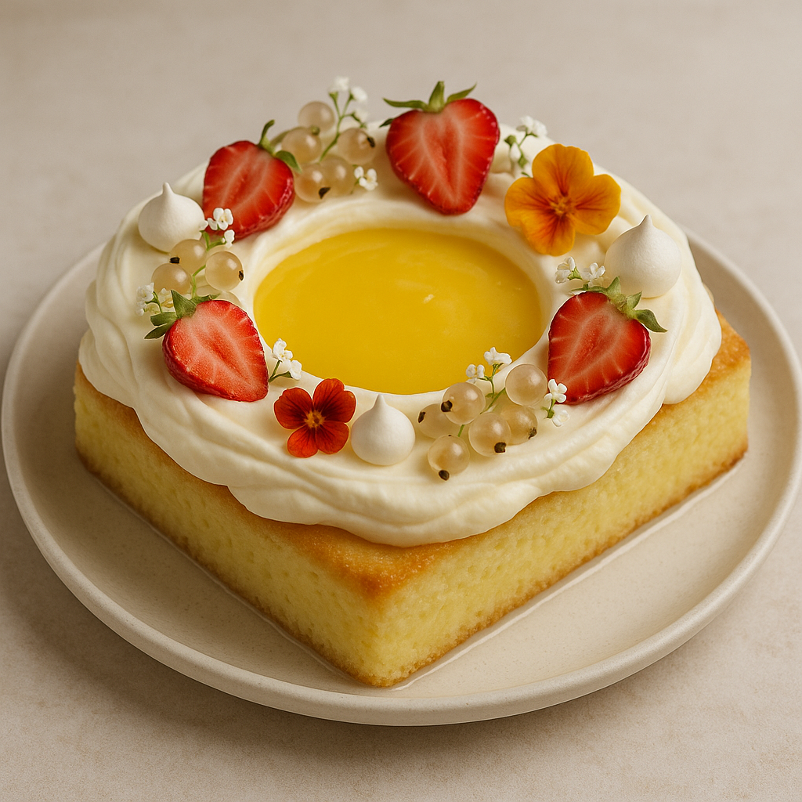
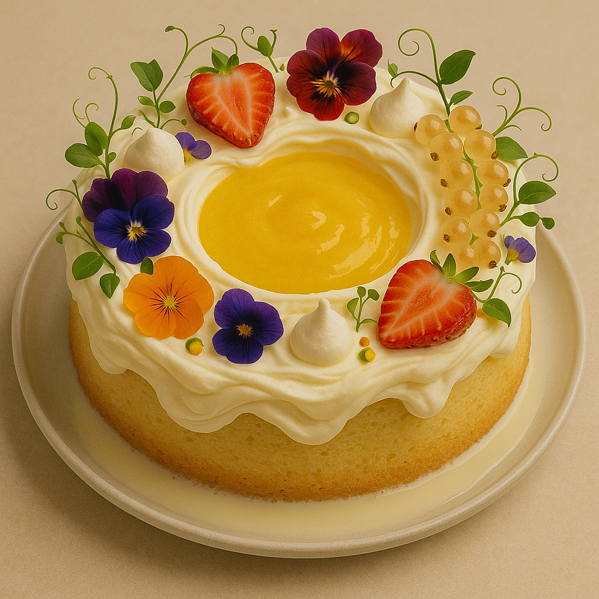
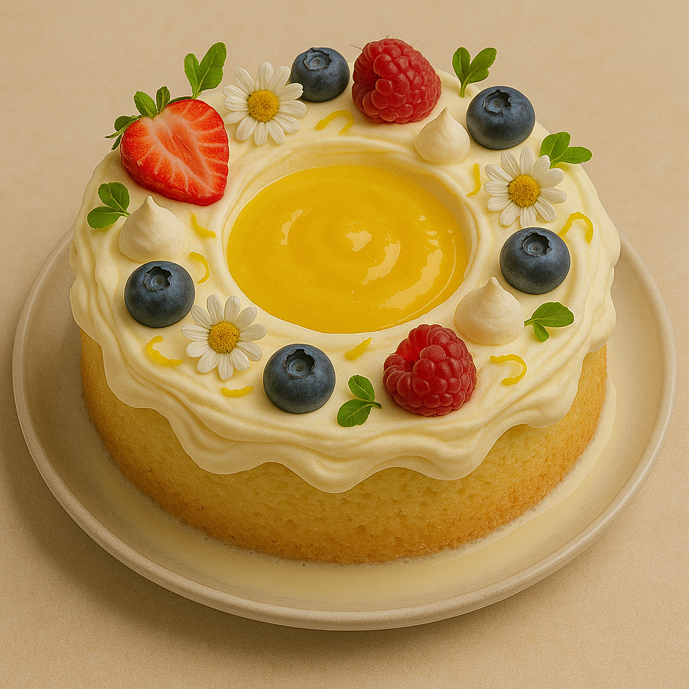

Ingredients
- 1 cup cake flour
- 1 ½ tsp baking powder
- 5 eggs, separated
- 1 cup sugar (divided)
- ⅓ cup whole milk
- 2 tsp vanilla bean paste
- Zest of 1 lemon
- 1 can evaporated milk
- 1 can condensed milk
- ¾ cup heavy cream
- 2 tbsp fresh lemon juice
- Lemon curd (homemade or store-bought)
- 2 cups heavy cream (for whipped topping)
- ¼ cup powdered sugar
Instructions
- Preheat oven to 350°F and prepare a lined baking pan.
- Beat egg yolks with ¾ cup sugar until pale. Stir in milk, vanilla, and lemon zest.
- Fold in flour mixture. Whip egg whites with remaining sugar and fold into batter.
- Bake 25–30 minutes. Cool, then poke holes for soaking.
- Combine three milks with lemon juice and vanilla. Pour over cake.
- Spread lemon curd on top once cooled.
- Whip cream with powdered sugar and spread over the top.
- Garnish with fruit or edible flowers. Chill before serving.